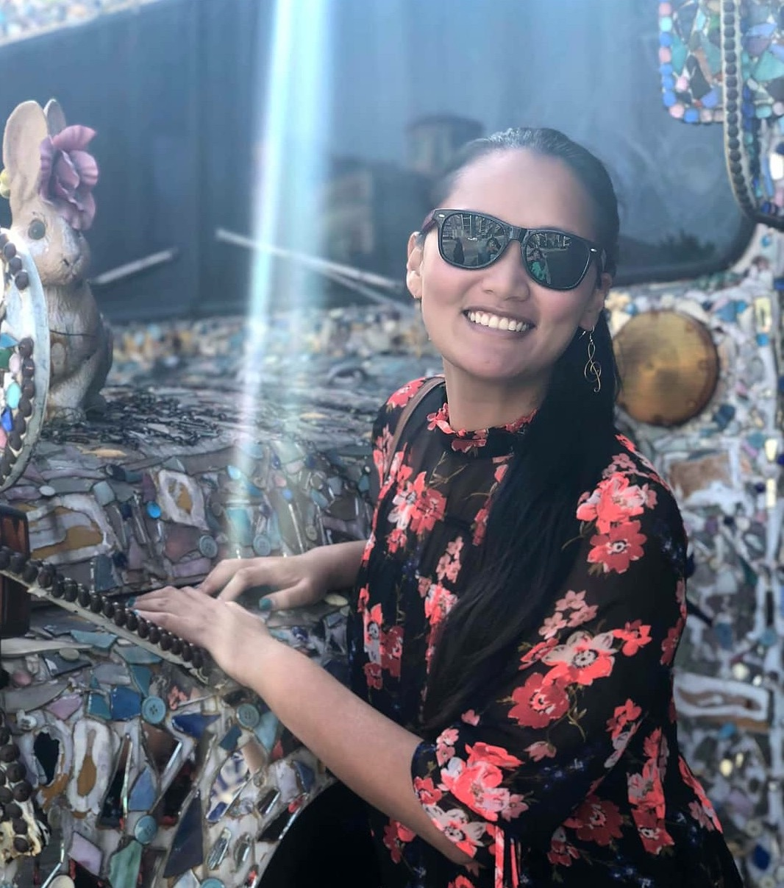

A B O U T M E
Hi! My name is Jess and I like to design.

With a non-traditional career path, I graduated in 2014 Cum Laude with a B.S. in Chemical Engineering and moved straight to New Orleans to work at Dow Chemical as an Improvement Engineer in the Hydrocarbons Unit.
Prior to graduation, I spent my summers and school year as an undergraduate researcher in Materials Science Engineering and Environmental Engineering. These experiences allowed the opportunity to contribute to the scientific community in 3 team publications and a self-realization that my original desire to obtain a phD was not the right long term fit.
Georgia Tech Material Science Engineering
UMBC Environmental Engineering
NASA Discover Air Quality Environmental Engineering